Contenu du chapitre
Le module random de Python donne accès aux nombres aléatoires et permet des opérations “stochastiques”. Pour nous informer sur ce module, nous consultons la documentation online (voir http://docs.python.org/2/library/random.html) et faisons appel à l’aide:
In [1]: import random
In [2]: help(random)
Quelques exemples (random.random)
In [3]: random.random()
Out[3]: 0.18430830705349943
In [4]: random.seed(12345)
In [5]: random.random()
Out[5]: 0.41661987254534116
Plus généralement (random.uniform)
In [6]: random.uniform(-1,1)
Out[6]: -0.6200572425563593
In [7]: random.uniform(-1,1)
Out[7]: -0.31687914845289566
In [8]: a = random.uniform(-1,1)
In [9]: a
Out[9]: -0.9529575637155989
In [10]: a
Out[10]: ???
In [11]: a = random.uniform(-1,1)
In [11]: a
Out[11]: ???
et encore (shuffle, choice, randint)
In [12]: L = range(10)
In [13]: L
Out[13]: [0, 1, 2, 3, 4, 5, 6, 7, 8, 9]
In [14]: random.shuffle(L)
In [15]: L
Out[15]: [1, 6, 2, 9, 4, 0, 5, 7, 8, 3]
In [16]: random.choice(L)
Out[16]: 8
In [17]: random.randint(0,1)
Out[17]: ???
Pour conclure (mixed type)
In [18]: L = [1, 2, 'ENS-CPGE', [1.1, 2.1]]
In [19]: random.choice(L)
Out[19]: [1.1, 2.1 ]
In [20]: random.shuffle(L)
Out[20]: ???
C’est à l’aide du module random que nous introduisons sans peine au calcul de Monte Carlo, des origines jusqu’à la recherche (presque) de nos jours. D’abord, faisons un histogramme des nombres aléatoires générés par la méthode random.random :
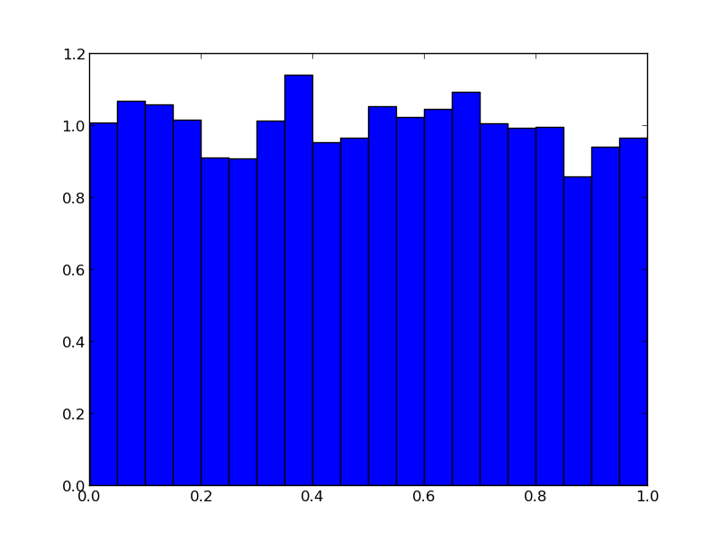Voici comment nous générons la figure (utilisant le module matplotlib), tout en construisant, petit à petit, une liste L, en ajoutant des nombres aléatoires
import matplotlib.pyplot as plt
import random
L = []
for i in range(10000):
a = random.random()
L.append(a)
plt.hist(L,20,normed='True')
plt.show()
Pour arriver à l’histogramme, nous pouvons aussi emprunter une voie ultra-rapide (et sauvegarder la figure dans un fichier) :
import matplotlib.pyplot as plt, random
L = [random.random() for i in range(10000)]
plt.hist(L, 20, normed='True')
plt.savefig('Random_histogram.png')
plt.show()
NB: La facilité avec laquelle se construisent (et se modifient) les figures est un des nombreux atouts du langage Python. Il y a plusieurs approches possibles. Nous nous restreignons ici au module pyplot (similaire à Matlab), et adoptons une approche learning by doing.
Vérifions alors le théorème central limite, qui dit que la somme de variables aléatoires converge vers une distribution gaussienne.
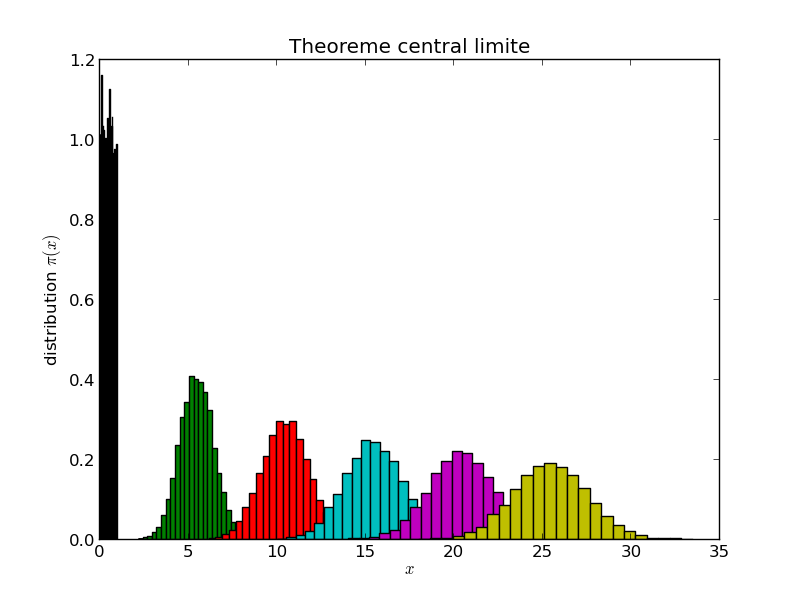Voici le programme:
import matplotlib.pyplot as plt
import random
for k in range(1,52,10):
L = []
for i in range(10000):
a = sum(random.random() for l in range(k))
L.append(a)
plt.hist(L,25,normed='True')
plt.title('Theoreme central limite')
plt.xlabel('$x$')
plt.ylabel('distribution $\pi(x)$')
plt.savefig('W_sum_of_random.png')
plt.show()
Ici, la version ultra-rapide du programme calculant et traçant la somme des random:
import matplotlib.pyplot as plt, random
for k in range(1,52,10):
L = [sum(random.random() for l in range(k)) for i in range(10000)]
plt.hist(L,25,normed='True')
plt.show()
Dans des applications, on remplacera naturellement la somme des nombres aléatoires par la fonction gauss (version ultra-rapide, avec cohabitation de hist et de plot):
import matplotlib.pyplot as plt
import random, math
L = [random.gauss(0.,1.) for i in range(10000)]
plt.hist(L,100,normed='True')
x = [i/100. for i in range(-200,200)]
y = [math.exp(-s**2 / 2)/(math.sqrt( 2 * math.pi)) for s in x]
plt.plot(x,y)
plt.show()
Exercice: Illustrez, sur une même figure, que la somme des variables aléatoires random donne bien une distribution gaussienne. Procédez aux changements d’échelle sur la partie générant les échantillons.
Regardons des vecteurs de variables gaussiennes, d’abord en deux dimensions: Le programme suivant illustre que la distribution de vecteurs de gaussiennes est isotrope dans l’espace, ici en deux dimensions...
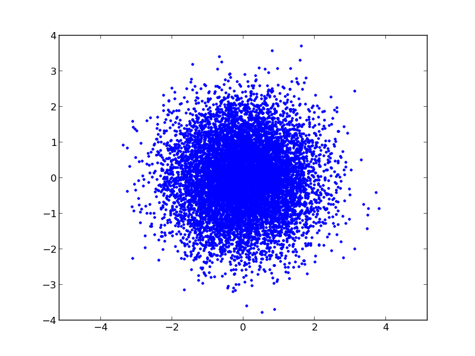Voici le programme:
import matplotlib.pyplot as plt
import random, math
x, y = [], []
for i in range(10000):
a, b = random.gauss(0.0, 1.0), random.gauss(0.0, 1.0)
x.append(a)
y.append(b)
plt.plot(x, y, '.')
plt.axis('equal')
plt.show()
... et ici en trois dimensions (notons l’utilisation d’un affichage en trois dimensions, et celle d’une deuxième figure pour l’histogramme des rayons...
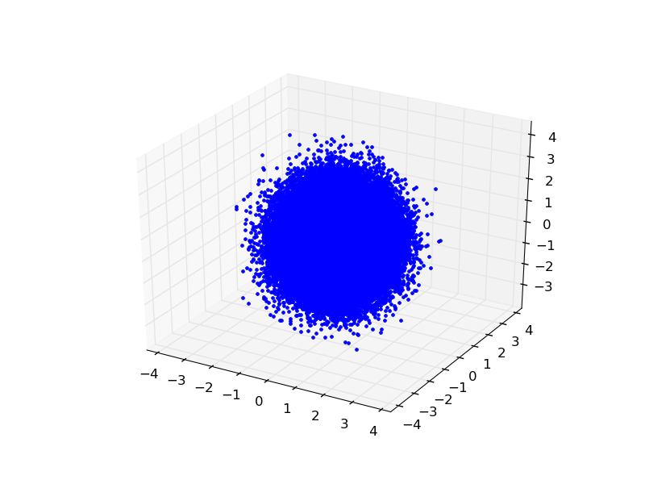 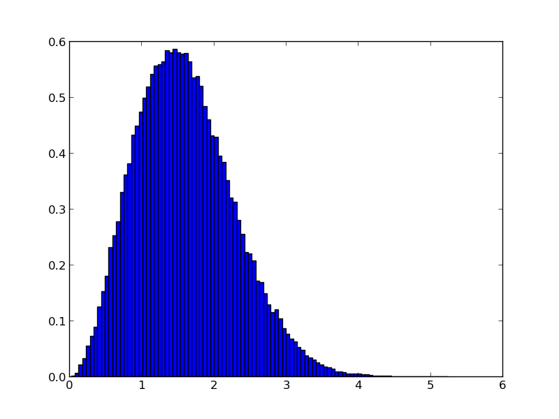*Exercice : Déterminez la distribution en r.
Voici le programme:
from mpl_toolkits.mplot3d import Axes3D
import matplotlib.pyplot as plt
import random
import math
ax = plt.gca(projection='3d')
ax.set_aspect('equal')
x, y, z = [],[],[]
radius = []
for i in range(100000):
a,b,c = random.gauss(0.0, 1.0), random.gauss(0.0, 1.0), random.gauss(0.0, 1.0)
radius.append(math.sqrt(a**2 + b**2 + c**2))
x.append(a)
y.append(b)
z.append(c)
plt.plot(x, y, z, '.')
plt.show()
plt.clf()
plt.hist(radius,100,normed='True')
plt.show()
Maintenant, nous modifions le programme, en mettant tous les vecteur à la même longuer (sans toucher à leur direction). Voici le résultat (en trois dimensions)
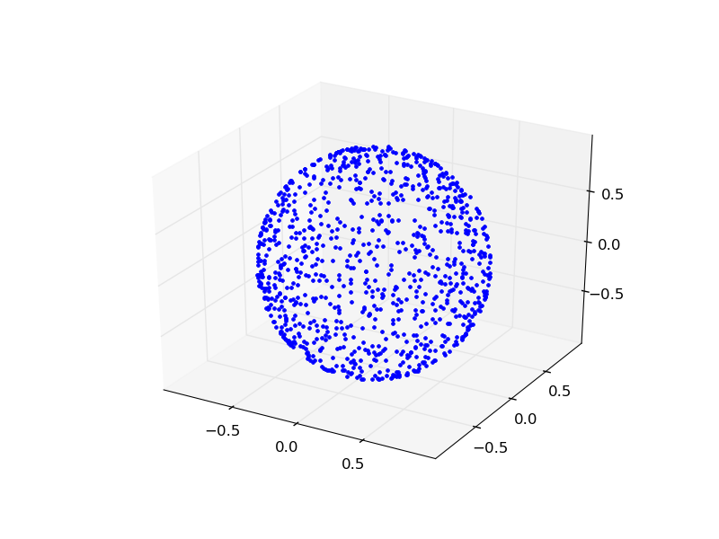et voici le programme
from mpl_toolkits.mplot3d import Axes3D
import matplotlib.pyplot as plt
import random
import math
fig = plt.figure()
ax = fig.gca(projection='3d')
ax.set_aspect('equal')
x, y, z = [],[],[]
for i in range(1000):
a,b,c = random.gauss(0.0, 1.0), random.gauss(0.0, 1.0), random.gauss(0.0, 1.0)
length = math.sqrt(a ** 2 + b ** 2 + c ** 2)
x.append(a / length)
y.append(b / length)
z.append(c / length)
plt.plot(x, y, z, '.')
plt.show()
NB: La distribution gaussienne uni-dimensionnelle est unique à donner une distribution isotrope en N dimensions, de cette sorte. C’est ceci le coeur de l’argument de Maxwell (1861) établissant que la distribution des composantes v_x, v_y, v_z de la vitesse des atomes dans un gaz ést une gaussienne. C’est aussi le raisonnement fondateur de la physique statistique... en seize lignes de code Python.
Si nous construisons un vector, non pas avec des Gaussiennes, mais avec des variables uniformément distribuées dans l’intervalle (-1,1), nous allons remplir, en deux dimensions, uniformément le carré entre (-1,-1) et (1,1).
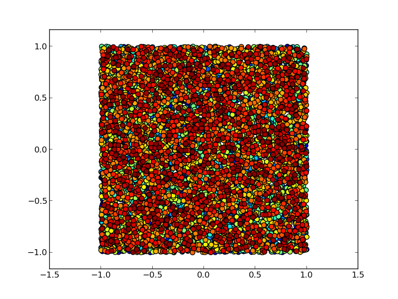Voici le programme (notez l’utilisation d’un code de couleurs progressif):
import matplotlib.pyplot as plt
import random
import math
x, y = [], []
for i in range(10000):
a, b = random.uniform(-1.,1.), random.uniform(-1.,1.)
x.append(a)
y.append(b)
xyc = range( len( x ) )
plt.scatter(x,y,c = xyc, marker = '.', s=200)
plt.axis('equal')
plt.show()
Ceci est la base de la méthode de Monte Carlo. Ici, nous l’utilisons pour calculer la valeur de pi, en comptant combien des échantillons du carré se retrouvent à l’intérieur du cercle d’unité:
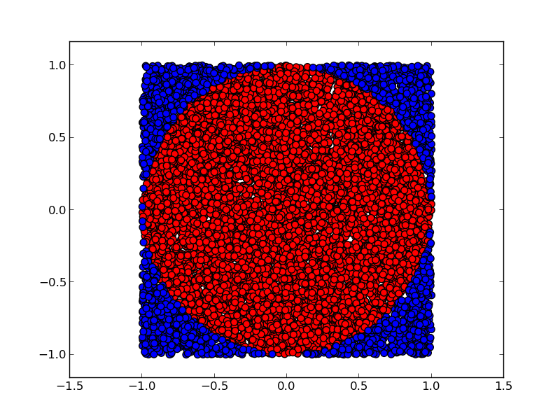Voici le programme (utilisant deux listes, plutôt qu’un code de coulers compliqué):
import matplotlib.pyplot as plt
import random
import math
x_inner, y_inner = [], []
x_outer, y_outer = [], []
for i in range(100000):
a, b = random.uniform(-1.,1.), random.uniform(-1.,1.)
length = math.sqrt(a**2 + b**2)
if length < 1:
x_inner.append(a)
y_inner.append(b)
else:
x_outer.append(a)
y_outer.append(b)
plt.scatter(x_inner, y_inner,c= 'red', marker = '.', s=200)
plt.scatter(x_outer, y_outer,c= 'blue', marker = '.', s=200)
print 4*len(x_inner)/float(len(x_inner) + len(x_outer)), math.pi
plt.axis('equal')
plt.savefig('W_direct_pi_color2.png')
plt.show()
Le rapport de l’aire bleue à l’aire totale est pi/4. Nous savons calculer pi!
Si vous n’êtes pas surpris de pouvoir calculer pi, modifiez les deux lignes:
length = math.sqrt(a**2 + b**2)
if length < 1:
... par:
if (a-0.6)**2 + (b-0.35)**2 < 0.5:
... et obtenez le résultat analytique dans ce cas aussi (bonne chance !)
Nous passons aux marches aléatoires. Chaque point est obtenu à partir de son prédecesseur, grâce à un petit changement (notez l’utilisation d’une grille (grid), de scatter plutôt que de plot, et d’un code couleur permettant de suivre l’évolution temporelle)
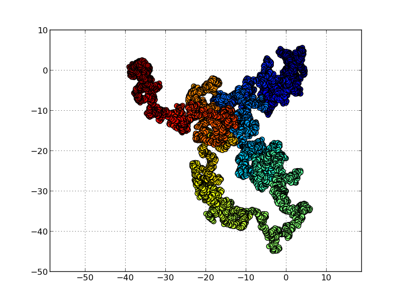Voici le programme de simulation de la marche aléatoire en deux dimensions:
import matplotlib.pyplot as plt
import random
x, y = 0., 0.
x_plot = [x]
y_plot = [y]
delta = 0.5
for i in range(10000):
del_x,del_y=random.uniform(-delta,delta), random.uniform(-delta,delta)
x, y = x + del_x, y + del_y
x_plot.append(x)
y_plot.append(y)
plt.grid()
plt.scatter(x_plot, y_plot,c= range(len(x_plot)), marker = '.', s=200)
plt.axis('equal')
plt.show()
Cette marche aléatoire partira à l’infini (pour toujours revenir, en deux dimensions). Mais comment construire une marche aléatoire restant à l’intérieur du carré ((-1,1), (1,1)), tout en y possédant une distribution uniforme ? Ce problème a été résolu dans le célébrissime travail de Metropolis et al (1953): en cas de refus, restons sur la configuration, et comptons-la de nouveau. Voici le résultat:
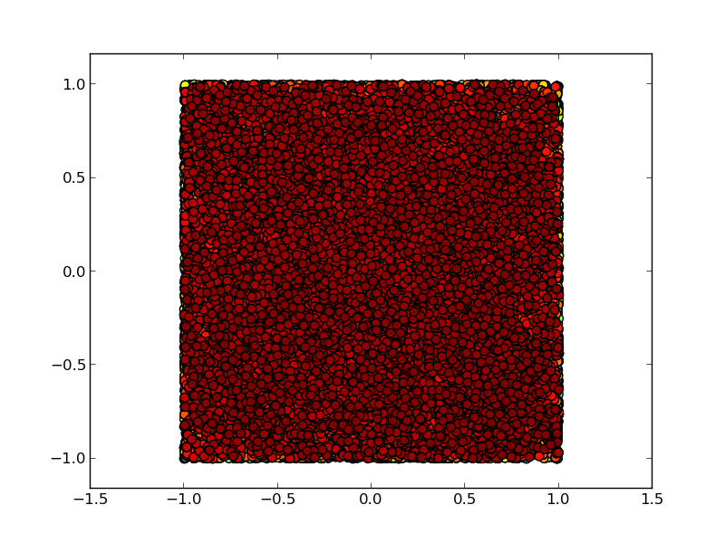Voici le programme:
import matplotlib.pyplot as plt
from random import uniform
import math
x_plot, y_plot = [], []
x, y = 1., 1.
delta = 0.1
for i in range(100000):
del_x,del_y=uniform(-delta,delta),uniform(-delta,delta)
if abs(x + del_x) < 1 and abs(y + del_y) < 1: # on sort du carre ?
x, y = x + del_x, y + del_y
x_plot.append(x)
y_plot.append(y)
xyc = range( len( x_plot ) )
plt.scatter(x_plot,y_plot,c = xyc, marker = '.', s=200)
plt.axis('equal')
plt.show()
plt.clf()
plt.hist(x_plot,100,normed='True')
plt.show()
...et ici la deuxième figure, l’histogramme en x des échantillons obtenus:
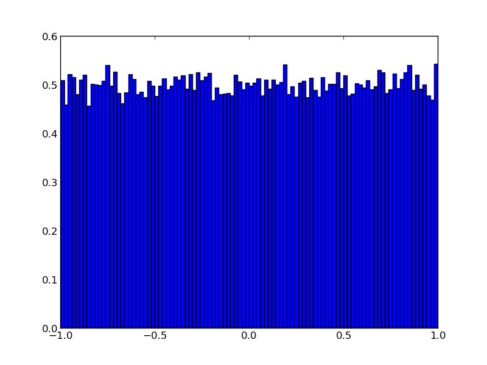NB: nous aurions pu prendre des gaussiennes pour générer del_x et del_y...
Voici une version du même programme uniquement dédié au calcul de pi (notez l’utilisation d’une fonction)
from random import uniform
def markov_pi(delta, N):
x, y = 1., 1.
N_hits = 0
for i in range(N):
del_x,del_y=uniform(-delta,delta),uniform(-delta,delta)
if abs(x + del_x) < 1 and abs(y + del_y) < 1: # on sort du carre ?
x, y = x + del_x, y + del_y
if x**2 + y**2 < 1: # a l'interieur du cercle ?
N_hits += 1
return 4 * N_hits / float(N)
for k in range(10):
print k, markov_pi(0.3,100000)
Attention : La 7ème ligne de ce programme est non-triviale : si le mouvement x,y -> x+del_x, y+ del_y est interdit, on utilise x,y une deuxième fois.
Exercice : Dans ce programme, chacune des 10 “chaînes de Markov” débute au point (1,1). Modifiez-le pour que la chaîne k débute en fait sur la dernière des configurations de la chaine k-1. Trouvez une astuce pour bien initiez cette simulation.
NB: Pour ce problème, nous pourrions introduire des limites aux bords périodiques. Mais en général, ceci n’est pas possible.
Dans le célebre problème des sphères dures, il s’agit de générer des configurations aléatoires de N disques dans une boîte. En 1953, Metropolis et al ont proposé cet algorithme pour le résoudre. Il s’agit de l’exacte analogue de l’algorithme chaîne de Markov que nous avons utilisé pour calculer pi.
from random import uniform as ran, choice
import matplotlib.pyplot as plt
L = [(0.25,0.25),(0.75,0.25),(0.25,0.75),(0.75,0.75)]
sigma = 0.15
delta = 0.15
square_x = [0, 1, 1, 0, 0]; square_y = [0, 0, 1, 1, 0]
number = 0
for iter in range(100):
a = choice(L)
L.remove(a)
b = (a[0] + ran( -delta, delta),a[1] + ran(-delta , delta))
min_dist = min((b[0]-x[0])**2 + (b[1]-x[1])**2 for x in L)
box_cond = min(b[0],b[1]) < sigma or max(b[0],b[1]) >1-sigma
if box_cond or min_dist < 4*sigma**2:
L.append(a)
else:
L.append(b)
if iter%1 == 0:
number += 1
plt.axes()
for x,y in L:
cir = plt.Circle((x,y), radius=sigma, fc= 'r')
plt.gca().add_patch(cir)
plt.axis('equal')
plt.plot(square_x,square_y)
plt.savefig('W_markov_disks'+ str(number)+ '.png')
plt.show()
plt.clf()
Voici une animation, avec des configurations prises tous les 100 pas...
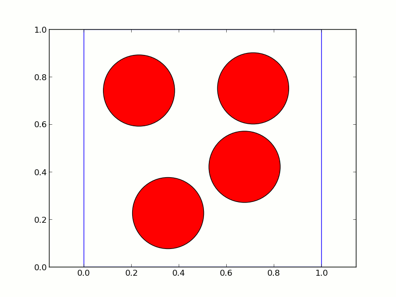Nous voilà au coeur de la physique statistique, avec des processus statistique décrivant des phénomènes physiques, comme la transition liquide-solide, le comportement des matériaux, et la structure de la matière. Dans tout ceci, la simulation numérique, notamment celle utilisant la méthode de Monte Carlo, est très utilisée, et le langage Python s’y porte très bien. Derrière l’image simple du langage se cache toute la complexité de la programmation moderne.

{kind=link}
{kind=link}
{kind=link}
{kind=link}
{kind=link}
{kind=link}
{kind=link}
{kind=link}
{kind=link}
{kind=link}
{kind=link}
{kind=link}
{kind=link}